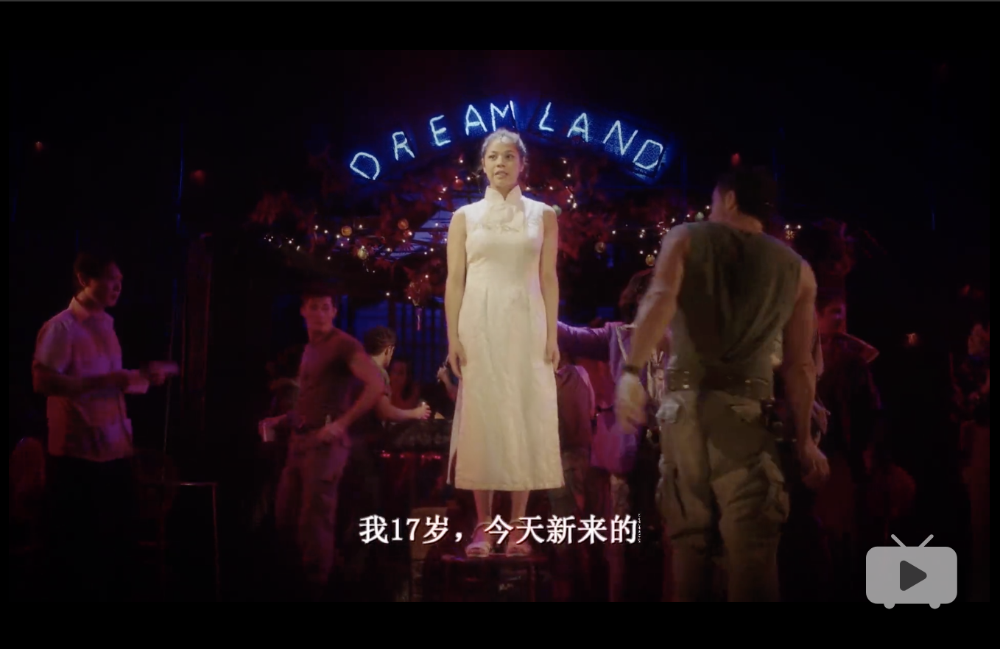
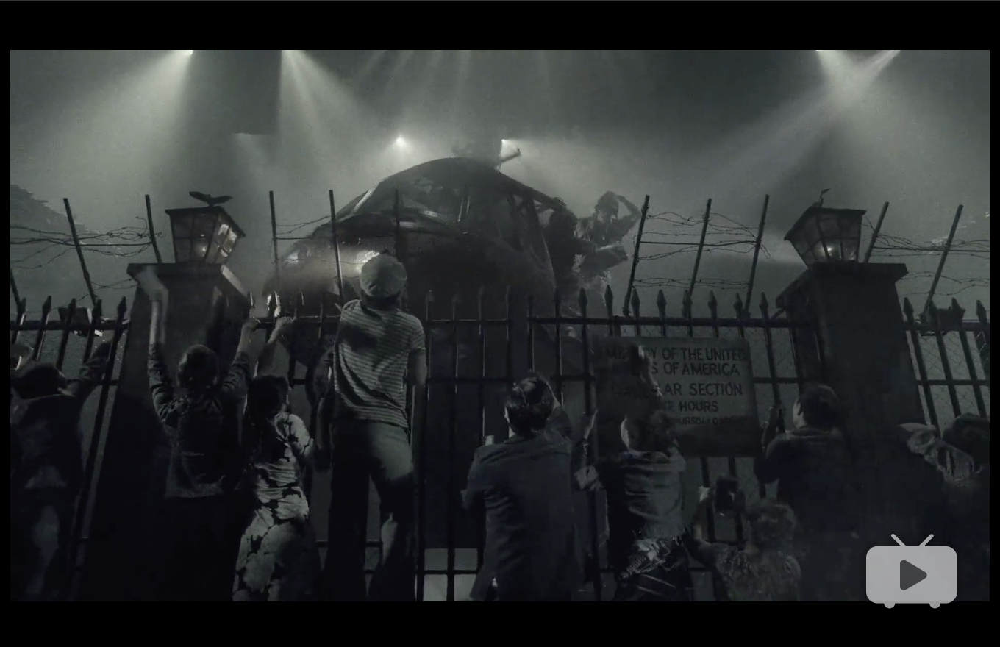
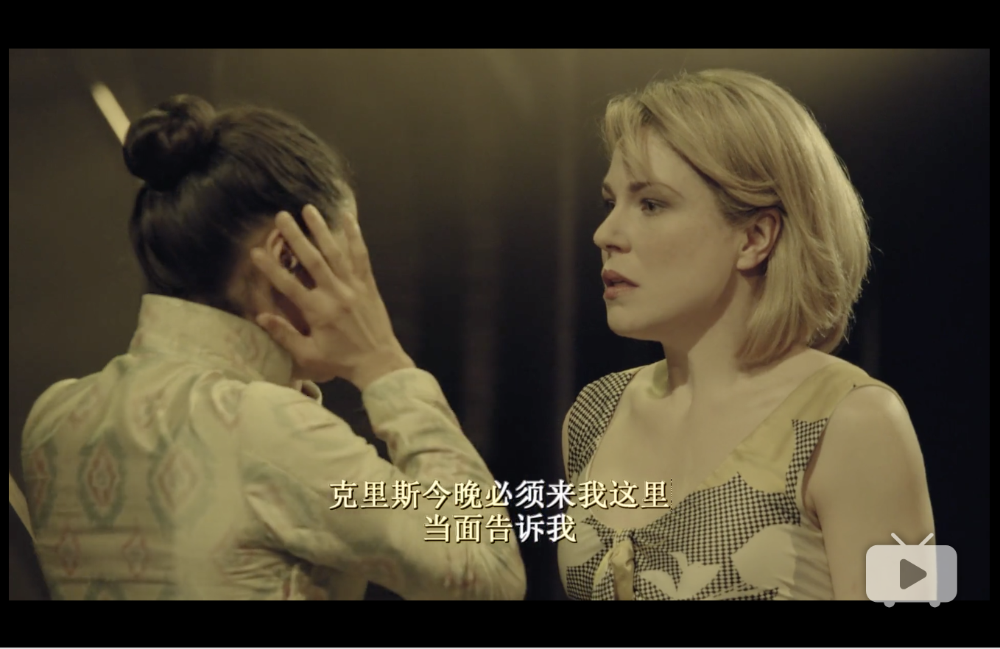
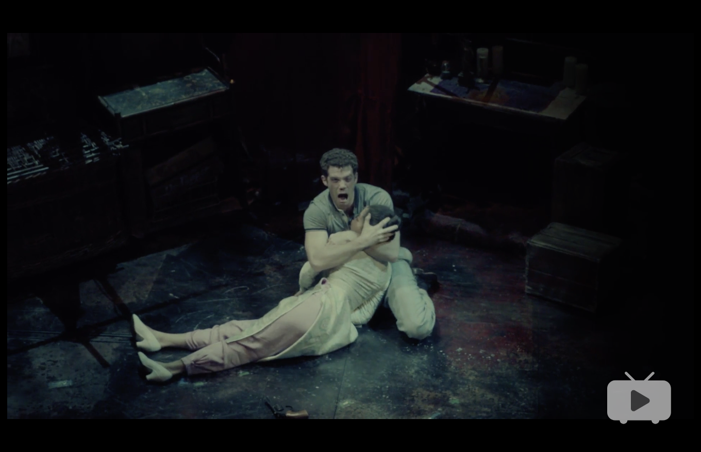

Miss Saigon (Musical 2014)
音乐剧：西贡小姐（英国/美国 2014年）
「西贡小姐」是西方现代四大音乐名剧之一, 也是在80年代是百老汇上受欧洲影响的剧目之一，与「歌剧魅影」，「悲惨世界」和「猫」齐名. 据说是翻「蝴蝶夫人」.
第一幕
故事发生在1975年西贡的一间夜总会，就在西贡解放前几天。今天是金（Kim)做妓女的第一天，工程师（Engineer）向她问候。工程师是一个法国裔越南皮条，有一家迎合美国士兵需要的夜总会.
在后台，所有的女孩子们都准备着晚上的节目，她们一边帮金穿上戏服一边取笑她的幼稚.
夜总会的节目开始了，所有的美国大兵和越南妓女们一起狂欢（The Heat is on in Saigon）.
士兵们都知道他们已经节节败退，只想在离开越南以前再玩一下子. 我们认识了克里斯（Chris）— 一个年轻的、却不幻想的陆军作战队士兵 和他的朋友约翰(John).
女孩子们在大兵面前骚手弄姿，都想争夺“西贡小姐”的称号. 得主将被作为奖品被大兵们抽奖，而妓女们认为，这就表示她们可能会被带到美国去，从此过上好日子. 每一个妓女都用自己上场的机会使出浑身解数取悦大兵们，而轮到金时，她的纯洁与天真吸引了克里斯的注意.
约翰注意到了克里斯对金的迷恋，他与工程师谈了价钱，给克里斯买下了金的处女之夜（The Transaction”）.

克里斯痛恨越南的一切，然而他完完全全为金迷恋，他问上帝为什么他一定要在临走之前才遇到这个人（Why God Why”）。
金醒来之后，克里斯想给她钱，被她回绝了,他告诉她她不需要在夜总会卖身，因为他想让她跟他一起生活。两个人疯狂地相爱了（Sun and Moon”）。
金和其他的女孩子们为克里斯和金准备了婚礼（“婚礼 - Dju Vui Vai”）。在婚礼上，金的表兄岁（Thuy），也是金的父母为以前她订下的丈夫，闯进来要救金离开这里。
当他得知金是要嫁给另一个人的时候，他十分伤心 （“岁的到来 - Thuy’s Arrival”）。
金为此十分难过，她认为克里斯也会离开她，克里斯说他是要离开越南，但是他会带金一起走。克里斯与金拥抱在一起，跟着一首夜总会的庸俗歌曲“世界的最后一晚”一起跳舞。然而这首歌在这里非比寻常，因为对金和克里斯来说，这一晚，的确就是她们的世界里的最后一晚。（“世界的最后一晚 - Last Night of the World”)。
故事向后跳跃三年，我们到了1978年。西贡（现已经改名为“胡志明市”）人都走到街头，举城欢庆打败美国、越南统一三周年的纪念活动（“龙之晨 - Morning of the Dragon”）。
岁现在是新政府的官员，他命令他手下的士兵去把工程师找来,命令工程师去把在共产党入城时就没了踪影的金找到，并把她带到他那里去。
金被克里斯留在了越南，她一直生活在贫民窟里。她依然深深地爱着克里斯，而且坚信他会回来救她出去。
与此同时，我们看到克里斯与他的新美国人妻子，艾伦(Ellen），躺在一起。艾伦很爱克里斯，但是她很渴望知道一直缠绕他内心的阴影究竟是什么。他突然从睡梦中惊醒，坐起来叫着金的名字，艾伦安慰他重新躺下。
两个身处地球两端的女人不约而同地表白她们对克里斯的爱情。（“我依然相信 - I Still Believe”）。
工程师找到金，把她带到岁那里。岁解释说他寻找金已经找了三年了，而且，他仍然想把金带回家做他的妻子。她拒绝了，哪怕克里斯不在她也全心全意地爱着他。金把她与克里斯的两岁的儿子，谭（Tam），介绍给岁，令岁大为震惊。
岁愤怒已极，他骂金是叛国者，谭则是国家的敌人，他企图用刀杀了谭。金抽出克里斯留下的手枪，被迫朝岁开了一枪。岁死在了金的怀中。
金跑到工程师那里，告诉他所发生的事情（“假如你愿意死在温床上 - If You Want to Die in Bed”）. 金吐露克里斯是谭的父亲，他立刻兴高采烈把这小孩看成自己去美国的签证。他告诉金从现在起他就是孩子的叔叔了，而他将带她们去曼谷。金向谭保证，哪怕是牺牲她的性命，她也要让谭过上好的日子。他们三人随着其他饱受坚辛的难民一起，登上了去曼谷的船（“为了你我可以付出生命 - I’d Give My Life for You”）。
第二幕
1978年，乔治亚州的亚特兰大市。约翰现在为一家帮助”Bui-Doi”（指越战期间美国士兵与越南女人所生的小孩）寻找美国父亲的机构工作。
在越南，这些混血儿因为外貌特称明显，经常受到很大程度的歧视。
约翰把克里斯拉到一边，说他有很重要的消息要告诉他。约翰告诉克里斯金还活着，这让克里斯十分欣慰，因为他几年来一直做着金死去的梦魇。
1978年，曼谷。工程师现在已经沦落到招揽游客进下等酒吧的皮条客，而金则是酒吧里的舞女（“真是浪费 - What a Waste”）。
克里斯、艾伦和约翰来到曼谷寻找金的下落，约翰走进酒吧，见到了金和工程师。金见了约翰十分惊讶，等听说了克里斯也在曼谷的消息更是欣喜不已。
约翰去找克里斯的时候，工程师让金自己去找克里斯，因为他不相信克里斯真的会来（Chris is Here）。在金准备出门去找克里斯的时候，岁的鬼魂出现了。他恐吓金，说克里斯会跟西贡解放那晚一样，遗弃金。金的思绪，立刻被带回到那一夜（“金的梦魇 - Kim’s Nightmare”）。
1975年，西贡。在越共逐渐逼近、西贡日益混乱的时候，克里斯和金作好了逃离越南的准备。克里斯被招回去保护大使馆，他把枪留给她，让她在家收拾行李，说他们会有充足的时间离开。
几乎就在克里斯走进大使馆的那一瞬间，大使馆的门关闭了。大使命令不许放任何越南进入大使馆。
听说了这个消息，金挤到大使馆门口，但她不过是无数企图收买、乞求、爬进大使馆的越南人中间的一个罢了。
与此同时，美国人不许克里斯出去。约翰最后不得不打他的脸，让他停止无谓的挣扎。克里斯坐上了最后一班离开西贡的直升飞机，金从大门口看着他离开，她绝望地向他表白着她对他的忠贞。直升飞机在克里斯呼唤金的声音里起飞了。

1978年，曼谷。回忆结束了.
金来到克里斯的旅馆房间，但当她走进屋里的时候，那里只有一个女人，艾伦。而当艾伦告诉她他们不可能带谭去美国时，她所有那些希望儿子过上好日子的梦想也破灭了。艾伦说他们可以从美国寄钱来救济她们。金仍不能相信，她愤怒地要求克里斯当面告诉她这些话（Room 317）

克里斯和约翰没找到金，回到旅馆。克里斯听艾伦讲述了和金的激烈会面，惊恐万分。他决定让金和谭留在曼谷，他们会从美国寄钱来保证她们的生活，他们认为金是个好人，她“很聪明，她会理解的”（“对质 - The Confrontation”）。工程师仍把谭看做自己去美国的船票，他梦想着自己在美国的崭新生活。他、克里斯、艾伦一起来到金的房间（The American Dream）。
在金的房间里，金告诉谭他应该高兴，因为他现在有爸爸了。看到克里斯、艾伦、约翰和工程师从远处走过来，她对谭说了再见，吻着他的额头。她走到帘子后面，开枪自尽了。
克里斯、艾伦、约翰和工程师听到枪响立刻冲进房间，看到金倒在地上奄奄一息。克里斯跑到金旁边抱她起来，他心碎地问金为什么要这样做，但她只是求他再抱她最后一次。
她再次重复当初两人坠入爱河时说过的话：“为什么一夜之间我们改变了这么多？”在其他人震惊的目光里，金在克里斯的怀里死去了。而艾伦跪下来，朝谭伸开了双臂（Finale）。

总结
「西贡小姐」虽然借助了一个「蝴蝶夫人」的老套故事，极尽一切歌唱和宣泄，嘲讽整个时代人性的虚伪，悲天悯人的大情感收纳着一个小小女人的辛酸之泪.
假借中西悲催恋情演绎的他乡故事不过是一个西方意淫的东方爱情和充满嘲讽的所谓的美国梦的结合罢了。
西贡小姐中，金比蝴蝶夫人巧巧桑更加立体，有血有肉、柔中带刚，会为维护真爱而勇敢杀人，会为内心自由而怒斥情敌，会为孩子再度沦落风尘，表现在Sun and moon中那种婉约，在I’d give my life for you中那种坚毅的在Please中那种渴望和坚守。虽然两者皆以自杀收场，金是悲壮睿智且义无返顾的。
如果这部风靡全球的歌剧曾经给以无数西方观众以灵魂震撼，在全球化的视野下，他们将如何定位他们的东方，他们将如何想象这朵“东方美学”的西方救赎意味。
当然，或许我们不必纠结于这种文化矛盾和生命哲学气息，于音乐来说不应该受精神的绑架；让故事安于它们被叙述的语境吧。